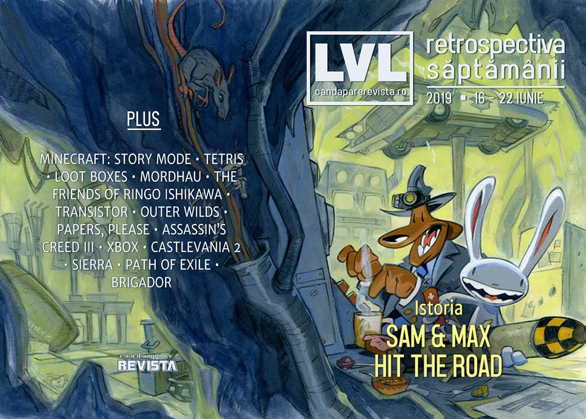

Retrospectiva săptămânii 16 - 22 iunie 2019
Toată lumea încă își revine după E3, așa că știrile sunt puține, dar asta vă lasă timp să citiți materialele mai consistente despre Sam & Max Hit The Road, Assassin’s Creed III sau Path of Exile, sau interviurile cu Alexey Pajitnov sau Mike Pondsmith, creatorul lui Cyberpunk.
Linkuri rapide:

Știri
- Episoadele din Minecraft: Story Mode revin la vânzare pe magazinul Xbox la un preț de 100 de dolari fiecare! Scopul însă nu e unul financiar, ci singura modalitate - aparent - prin care actualii deținători își pot descărca episoadele deja cumpărate, iar prețul mare a fost pus pentru a descuraja potențialii cumpărători noi. (Eurogamer, The Verge, Kotaku, Gamasutra)
- În cadrul unei audieri ținute de o comisie parlamentară britanică ce investighează tehnologiile cauzatoare de dependență, reprezentanții EA au negat asocierea loot box-urilor cu pariurile, susținând că acestea ar reprezenta de fapt „mecanici de surpriză”, mai apropiate de jucării, decât de industria jocurilor de noroc, și că ar fi „etice și distractive”. (Ars Technica, VideoGamesChronicle, PC Gamer, GamesIndustry.biz, Polygon)
Articole (critică, dev, design)
- How time-loop games offer escape from a world that is running out of time (Eurogamer)
- The secret logo hiding in dozens of games from Overwatch to Spider-Man (Polygon)
- Game Critics, Influencers and the Importance Of Their Coexistence (Finger Guns)
- We need more cosmic horror in games (I Need Diverse Games)
- Lightsabers In Video Games Are Too Weak (Kotaku)
- Why Dismemberment in 'Jedi: Fallen Order' is Such a Big Deal (Vice)
- Sex, Tetris, and Charlie Chaplin: The Alexey Pajitnov interview (Polygon)
Actualitate
Not-a-review
- The Friends of Ringo Ishikawa is a free-form 2D brawler with a unique sense of melancholy (The Verge)
- 'Mordhau' Is the Most Fun I've Ever Had Dying (Vice)
- “You Turned Left” (First Person Scholar)
- Live, die, repeat: How Outer Wilds piques curiosity in an ambivalent solar system (Gamasutra)
- Idiosyncrasy in The 'Indie'stry: Breaking Down Papers, Please (Spiel Times)
- Assassin’s Creed III (Critical Distance)
Industrie
- EA thinks gaming subscriptions will lead to weirder, more creative games (The Verge)
- Phil Spencer On Xbox’s Unusual Strategy, Working With Sony, And More (Kotaku)
- Xbox Boss on Microsoft’s Struggles With Game Quality And Efforts to Improve It (Kotaku)
- An interview with Cyberpunk creator Mike Pondsmith (Eurogamer)
- Video: How the ‘indiepocalypse’ changed the shape of indie success (Gamasutra)
- Q&A: After the Microsoft acquisition, what’s next for Double Fine? (Gamasutra)
- ‘The midsize developer is certainly disappearing,’ says Versus Evil founder (GameDaily.biz)
Istorie, retrospectivă
- Sam and Max Hit the Road (The Digital Antiquarian)
- In Defense of Castlevania 2: Simon’s Quest (Kotaku)
- The Game Archaeologist: Sierra’s Fates of Twinion and Ruins of Cawdor (Massively OP)
Dev, making of, mecanici
- The making of Path of Exile (PC Gamer)
- Video: Learning from the doomed launch of Brigador (Gamasutra)
- How Mordhau went from janky community project to the biggest melee brawler on PC (PC Gamer)
Design, world-building, artă
- Tokyo In Ruins Makes For Hauntingly Beautiful Art (Kotaku)
- Elite Player Took Some Beautiful Screenshots Of His 18-Week Journey Across Space (Kotaku)
- These sleek Cyberpunk 2077 posters have style and substance (VG247)
Anunțuri şi lansări de jocuri
Anunțate
- Disaster Report 4: Summer Memories a fost scos de la naftalină și apare la anul (Destructoid)
Acum cu dată de lansare
- Etherborn: 18 iulie (RPS)
Lansate
- 17 iunie: Duck Season PC (Steam)
- 17 iunie: Chook & Sosig: Walk the Plank (Steam, GOG)
- 18 iunie: Bloodstained: Ritual of the Night (Steam, GOG)
- 18 iunie: They Are Billions (iese din early access) (Steam)
- 18 iunie: Lovely Planet 2 (Steam)
- 20 iunie: Steel Division 2 (Steam)
- 20 iunie: My Friend Pedro (Steam, GOG)
- 20 iunie: Super Neptunia RPG (Steam)
- 20 iunie: Amid Evil (iese din early access) (Steam, GOG)
- 20 iunie: Million Arthur: Arcana Blood (Steam)
- 20 iunie: 198X (Steam, GOG)
- 20 iunie: Dota Underlords (Steam)
- 21 iunie: The Sims 4: Island Living (Origin)
Prăvălii de jocuri
- Videogame subscription services are scary (PC Gamer)
- How is Game Pass adding so many indie titles at launch? (GamesIndustry.biz)
Știri
- Alpha Protocol e retras de la vânzare de pe Steam după ce au expirat licențele pentru muzica din joc. (Eurogamer, Kotaku, PC Gamer, Destructoid)
Jocuri noi în catalog
Jocuri gratis și free weekends
- World War 3 will be free to play from June 20th to June 23rd (DSOGaming )
- Sail through a drowned world in free game The Things We Lost In The Flood (PC Gamer)
- Rebel Galaxy now free on the Epic Games Store (Shacknews)
- Upcoming Steam free weekend includes three FPS releases (PC Invasion)
Reduceri și promoții
- Croteam’s anniversary Steam sale includes a bargain bin VR bundle (RPS)
- Best PC gaming deals of the week – 21st June 2019 (RPS)
- Weekend PC Download Deals for June 21: New hotness (Shacknews)
- Weekend Console Download Deals for June 21: Gotta go fast! (Shacknews)
- Itch.io’s summer sale kicks off with a six-game, $9 bundle featuring Superhot (PC Gamer)
Retrospectiva săptămânii este rubrica duminicală în care trecem în revistă evenimentele săptămânii de pe frontul de gaming: știri şi articole (scrise de alții, bineînțeles, că e mai ușor aşa), industrie, lansări, oferte de jocuri, toate numai de savurat la cafeaua de duminică dimineața.
De asemenea, rubrica e deschisă oricui vrea și poate contribui. Dacă ai citit vreun articol sau vreo știre interesantă și crezi că merită incluse în retrospectiva săptămânii, te așteptăm pe forum pe unul dintre topicurile dedicate: Știri, Articole, Gaming România].